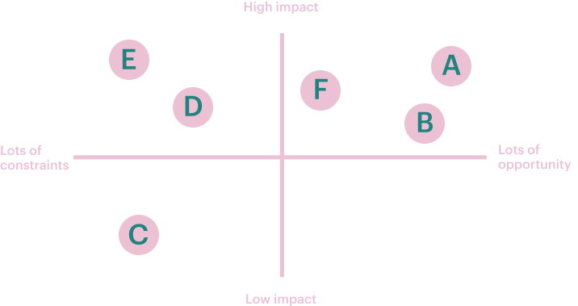
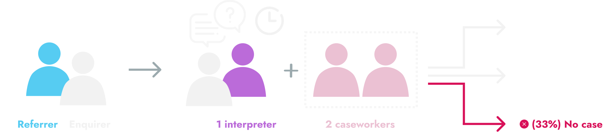
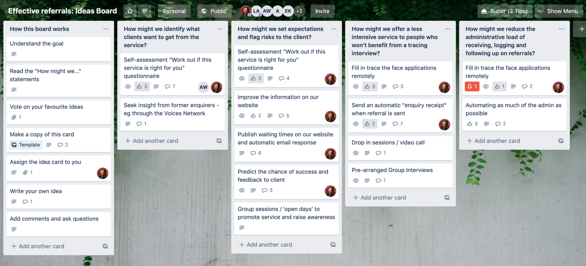
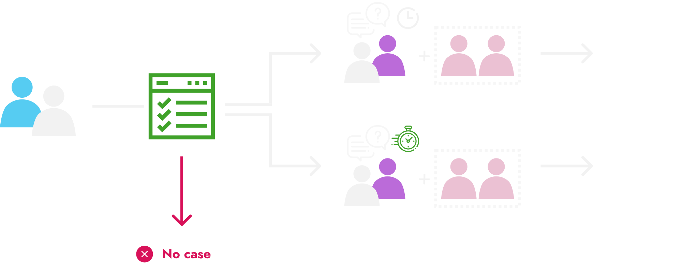
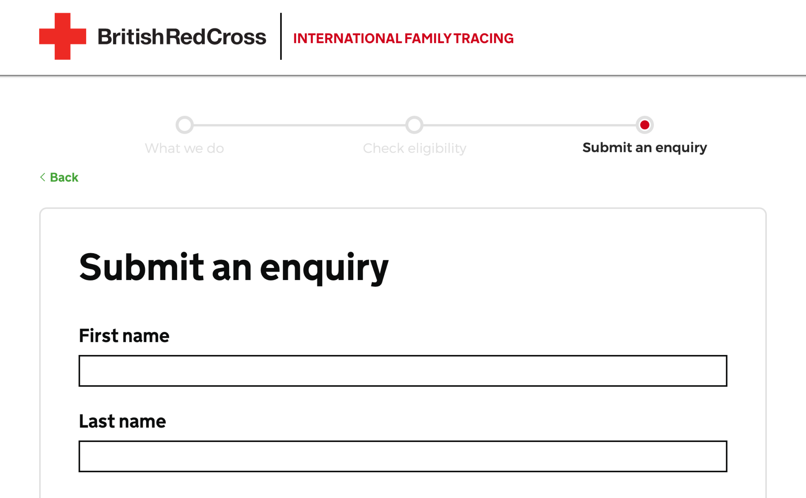

The challenge :
Reduce waiting lists for the family tracing service.
The solution :
A referral process that identifies who we can help, and whether they need a full or partial service.
The British Red Cross is part of a global network of staff and volunteers are searching, finding and reconnecting displaced families that have lost contact through migration, conflict or disaster.
But in the wake of mass migration and disaster, demand is growing, as are waiting lists. Some waiting lists in the UK are so long that certain areas have had to close for new referrals entirely.
One thing was clear before we started, the problem wasn't waiting lists, they were the symptom. The discovery phase was to identify why these waiting lists were building and where the greatest opportunities were. The discovery phase lasted 4 weeks and consisted of:
From this research, I was able to map the service and the key points in the journey from A to F:
At ever stage there were things slowing the service down and contributing to long waiting lists. Rather than tackle everything at once, I facilitated a prioritisation exercise with a small team of caseworkers and managers. The matrix helped us find the sweet spot where their was lots of opportunity to make big impact.
You can read in detail about the findings in this blog, but to summarise, we decided to focus on referrals.
This is because "lots of the time, [enquirers] come to the interview and don't know why they are there". 75% of cases come to us via referral and yet it is 'often only in the first interview that we realise we can't help'.
In 2019 there were 2713 intial interviews, 26% led to a full tracing enquiry, 41% led to clients being added to our online register 'Trace the Face' so that family could find the, and 33% led to a closed case. That meant that 2116 interviews shouldn't have happened or could have been 66% shorter.
The challenge updated
How might we make the most of the referral process so that we only invite people to interiew when we are confident we can help them find their family?
The frontline teams are spread all over the country, so we used Trello and some facilitated sessions to come up with a wide range of ideas, but also for me to share my early designs and ger feedback.
A branching form that asked enquirers and their referrers the questions need to work out if we could open a case or not.
 1. Maps, diagrams and user journeys
We started by mapping out the kinds of questions we'd need to ask and the order with the casework managers.
2. Figma prototypes for testing with internal referrers
I then made some Figma prototypes to test with caseworkers and social workers (referrers). Following some co-designing sessions we got closer to something that worked for the service, and put it into code to test with real end users - referrers.
3. Coded prototypes for testing with external referrers
I used the gov.uk prototyping kit to create a multi-branching form. This meant testing with referrers (social workers, legal advisors, solicitors, foster parents, youth workers etc.)
4.Reflecting on assumptions, sharing findings with local teams.
I went through multiple testing cycles where I regularly changed the prototype, testing new ideas each time. Every fortnight we kept local teams up to date and involved in the design process. You can check out an example of the informal show and tells, but skip a few minutes ahead for the assumptions section.
5. Identifying a service pattern that others could use
Other parts of the BRC became interested in this work and how it could benefit them. I unpacked how this design could be a repeatable pattern that can be used elsewhere. And demonstrated a few use cases.
6. Making a case for development support
With a multi-use design pattern, it was easy to get support, but coronavirus, and only 2, very over-worked developers in house. Timelines were shredded.
Fortunately, Made Tech gave us some pro bono help to convert the prototype into a form with a back end that could take enquiries.
We are making some more changes before launching a pilot in Yorkshire at the end of 2020.